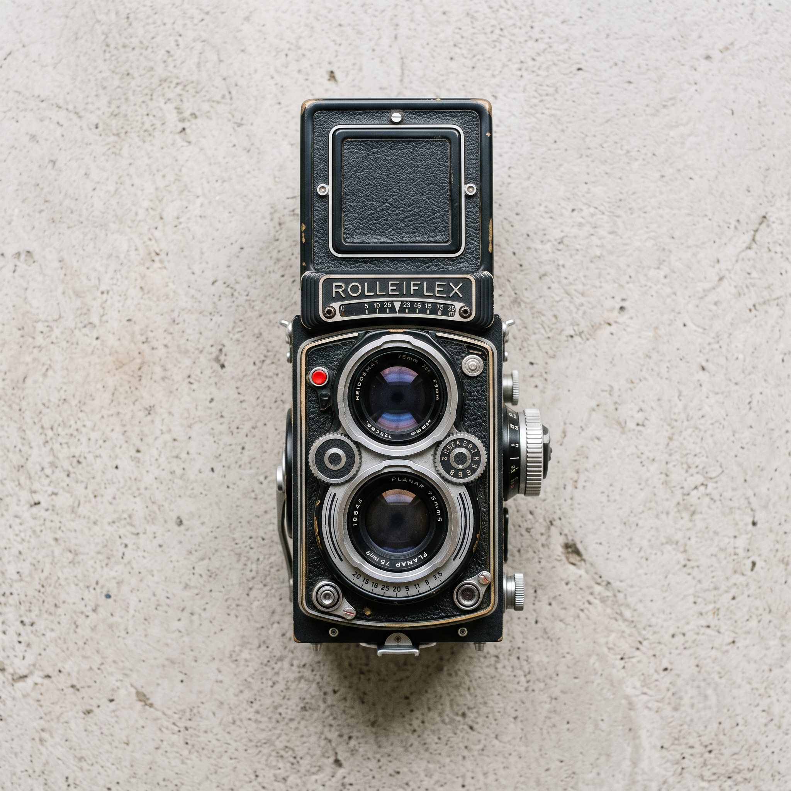
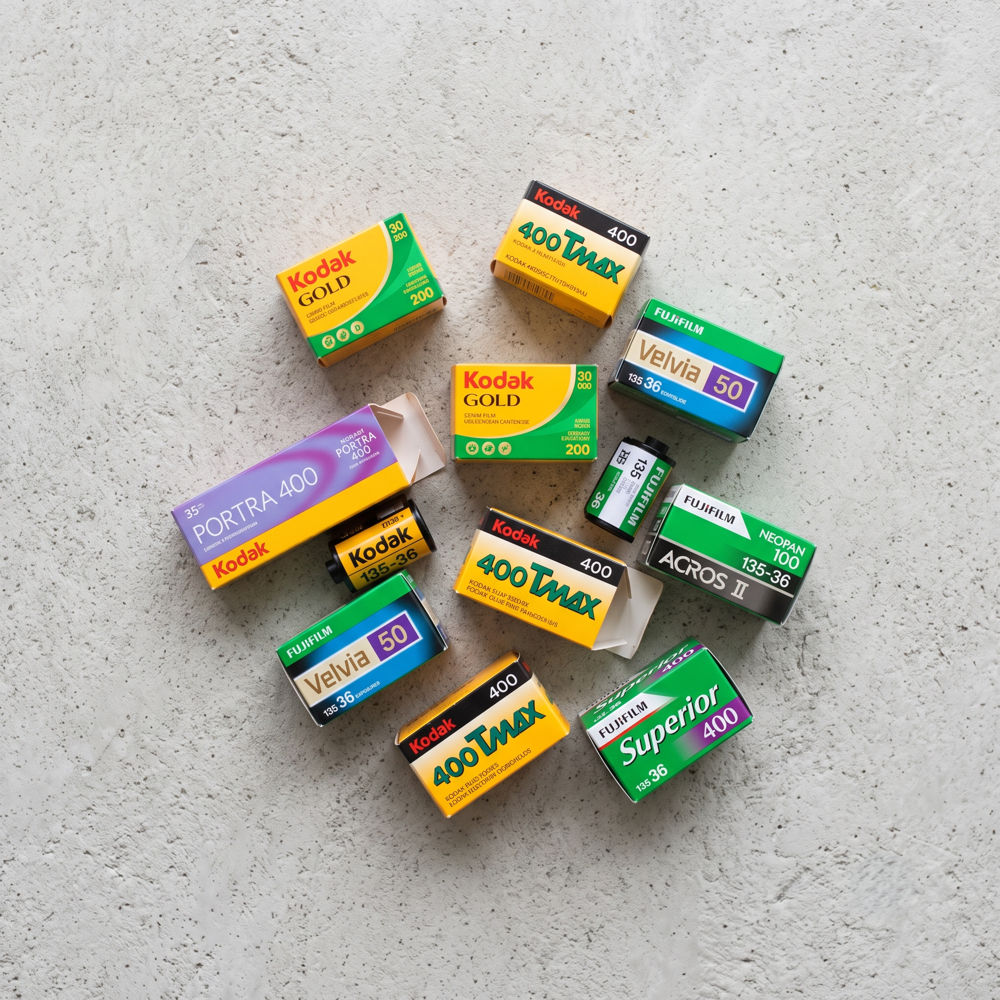
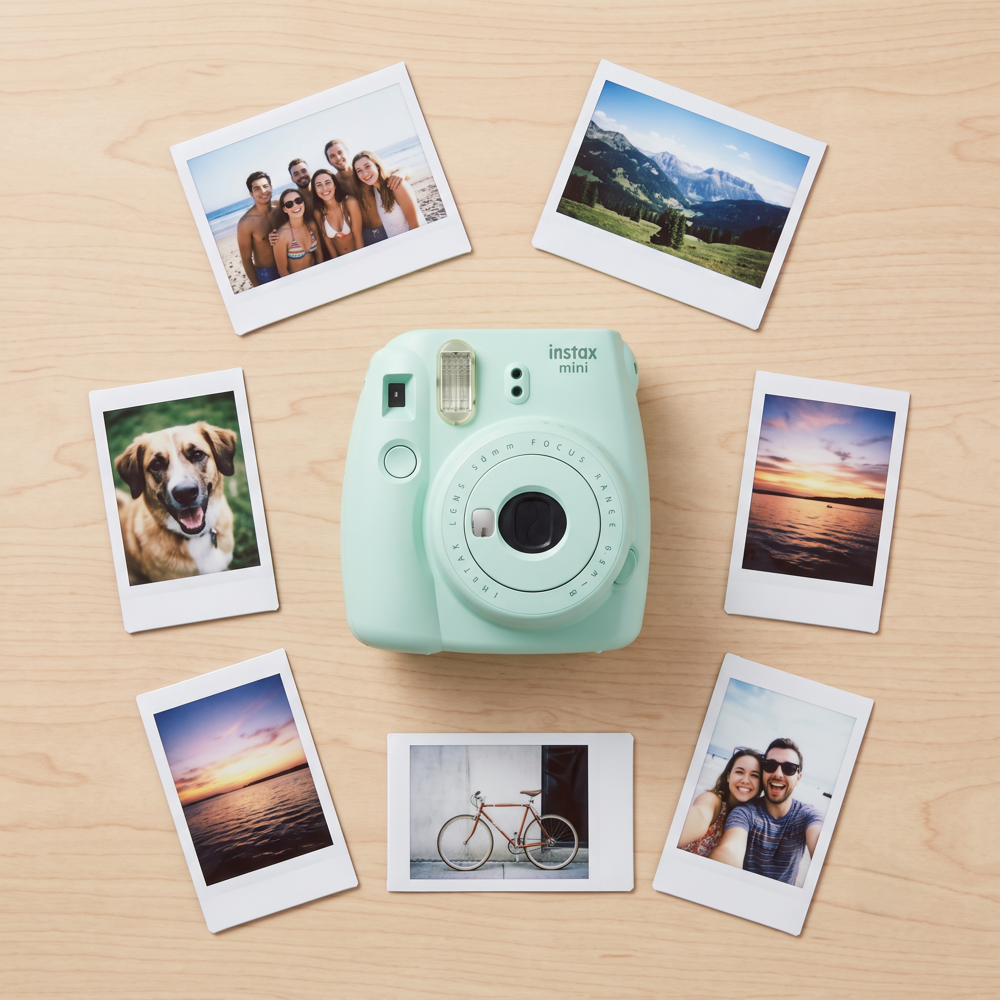
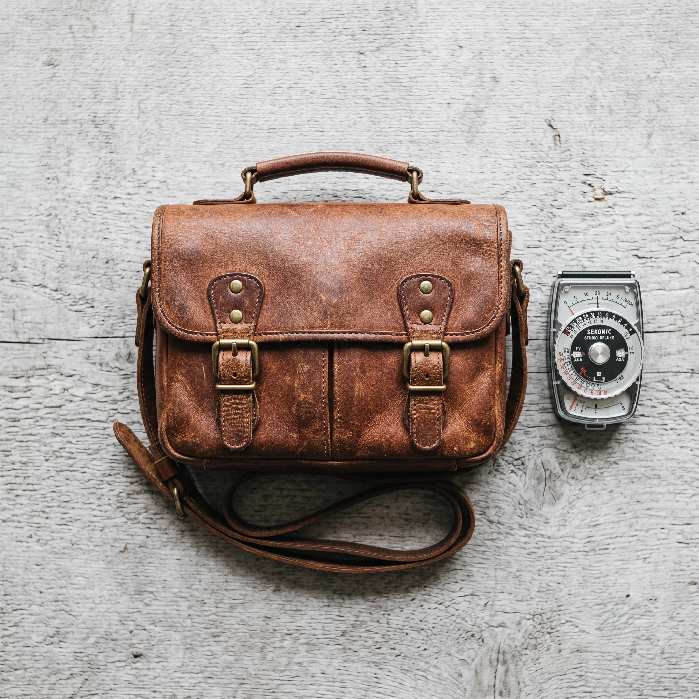
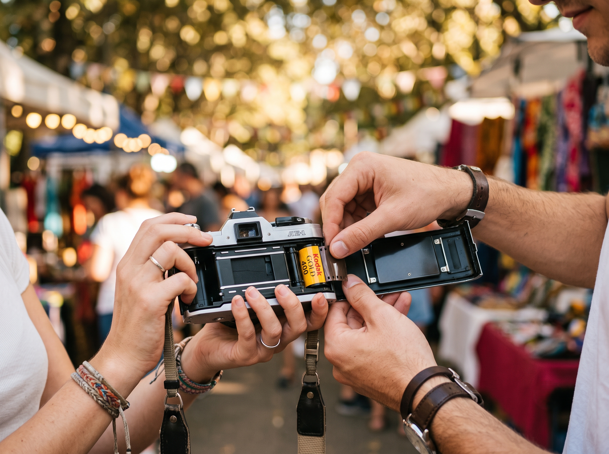

古典相機典藏攤
Rolleiflex、Leica、Canon……珍稀老相機一字排開， 每一台都在訴說屬於那個年代的攝影故事。
在數位洪流中，留一格給底片
「週末復古底片市集」是一個專為底片攝影愛好者打造的聚會場所。 每一攤都承載著一段故事，每一卷底片都是等待曝光的旅程。 我們邀請老相機收藏家、底片玩家與街拍攝影師， 共同在溫暖的週末市集裡，找到那一格屬於自己的影像。 無論你是第一次拿起底片相機的新手，還是擁有多年暗房經驗的老手， 這裡都歡迎你帶著好奇心踏進來。
本屆精選攤位搶先看

Rolleiflex、Leica、Canon……珍稀老相機一字排開， 每一台都在訴說屬於那個年代的攝影故事。

Kodak、Fujifilm、Ilford，各式色彩與黑白底片任你挑， 新手老手都能在這裡找到心頭好。

用 instax 即時記錄市集的美好瞬間， 每一張都是獨一無二的限量紀念，帶走屬於你的那一格。

復古真皮相機包、經典 Sekonic 測光表與各式編織肩帶。 為你的愛機挑選最合適的質感配件，展現職人品味。

攤位名額有限，先搶先贏